Похождения бравой игрушки Боззо
продолжение (начало)
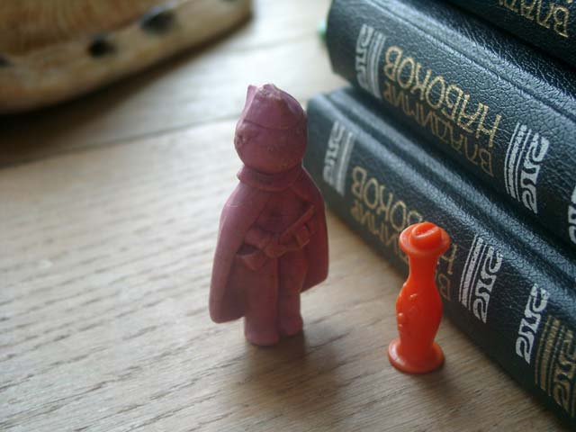
Пошол Боззо дальше и повстречался ему человек в плаще
- Добрый день уважаемый - говорит человек в плаще - как дела ваши?
- Намана, а ты кто такой?
Боззо уже начал подозрительно относится ко всем встречным
- Я хотел бы попросить вас об одной услуге - человек в плаще потряс кошельком -
вас она ненамного затруднит
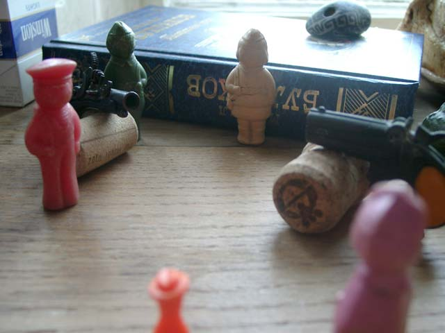
За поворотом стояло несколько удрученных людей
(удручённых - в смысле полузлых-полугрустных-полунедовольных)
- Понимаете, ради прекрасной дамы мы затеяли дуэль - начал рассказывать
человек в плаще - а у меня нет секунданта.
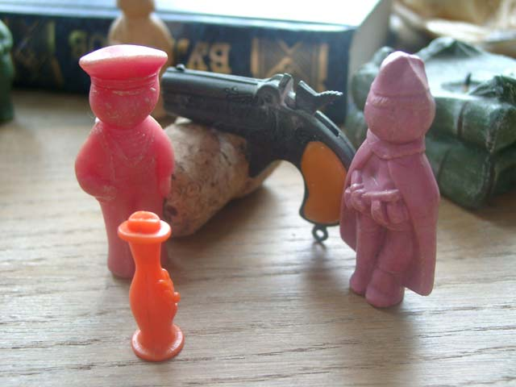
Подошёл второй дуэлянт и говорит:
- Послушай, ну зачем тебе эта баба сдалась? Давай отменим дуэль
- А честь мою от грязных пятен кто отмоет? - закричал человек в плаще
- Я честь твою видел в одном гнилом болоте!
- Значит сегодня там окажется твоя голова!
- А я тебе плодородные органы оторву, и баба тебе ненужна будет!
...
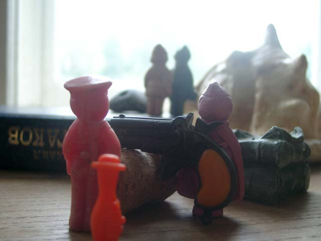
Может конечно Боззо в чём-то и ошибался, но помоему тот,
с кем за спинами дуэлянтов флиртоваля прекрасная дама был второй секундант.
А может и нет, но в любом случае пора была вспомнить про бабушку...
И вообще. В этом мире быть маленьким и оранжевым очень сложно
каждый норовит тебя обидеть или использовать...
Боззо загрустил
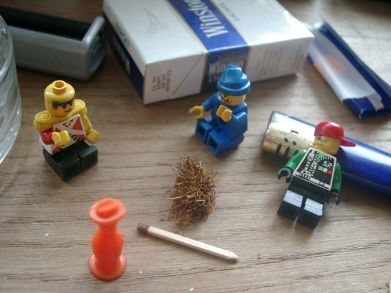
- Эй приятель! Ты чего такой грустный? - Окликнули Боззо человечки Лего -
Присаживайся к нам, плохого не зделаем, а настроение поднимем!
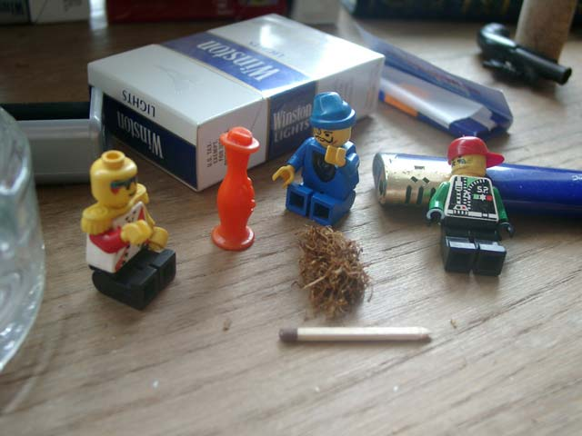
"А ведь не грех и передохнуть немного с растаманами" - подумал Бозо
- Ты чего такой грустный? - Спросил ещё раз его человечек в синей шапке
- Да так, - ответил Боззо - Жизнь она как фекалии
- Э! Беда с парнем! - проговорил человечек в погонах, и протянул Боззо здоровенный косяк
...
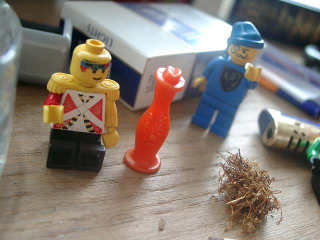
- Ты вот пойми - говорил генерал после шестого косяка - не жизнь управляет тобой
а ты управляешь жизнью!
Если ты скажешь своё твердое НЕТ, то никто и пискнуть не посмеет
Ведь в чем сила? В чём сила брат? - спросил генерал у лежащего парня в кепке
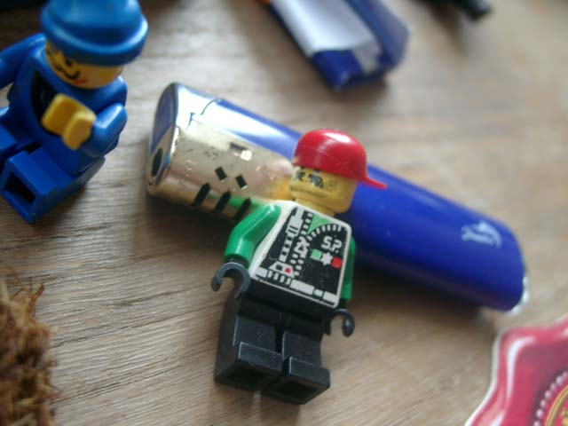
- Ой-йооо, мне щас башку снесёт - только и смог проговорить парень
- Вот видишь - генерал снова обратился к Боззо - брат говорит, что в косяке сила
А сила в нас самих!!!!
Ну и в косяке тоже есть сила, оставайся с нами - убедишся
- Нее, - говорит Боззо - мне к бабушке надо
- Ну тогда возьми на дорогу, братьям подарок принесёшь
а то у нас этого добра навалом
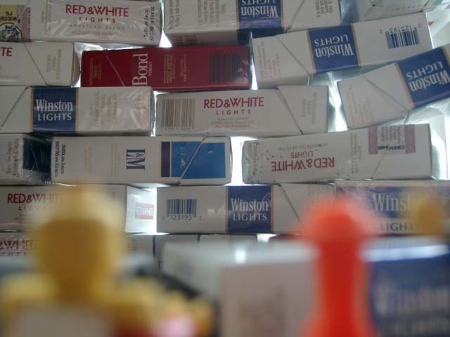
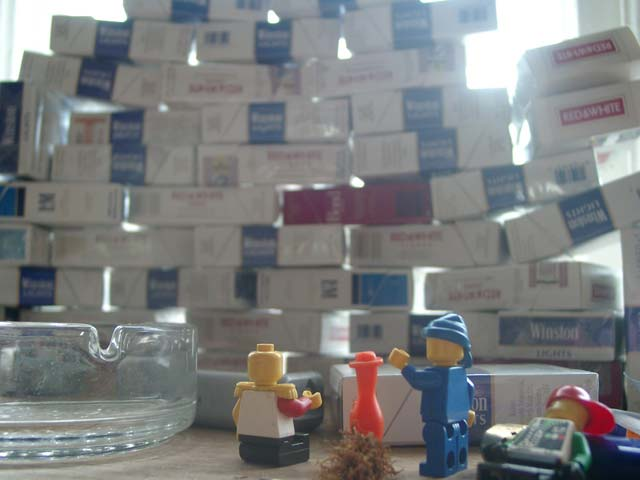
- Мне щас башку снесёт!!! - снова заорал человечек в кепке
- ААА!!! ему башку снешло! - заорал человечек в синей шапке
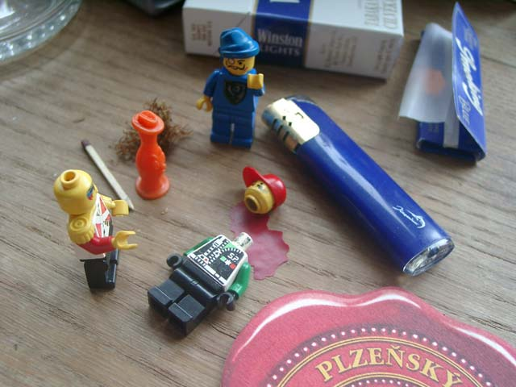
Боззо от испуга даже траву взять забыл, убежал сломя голову
Дальше